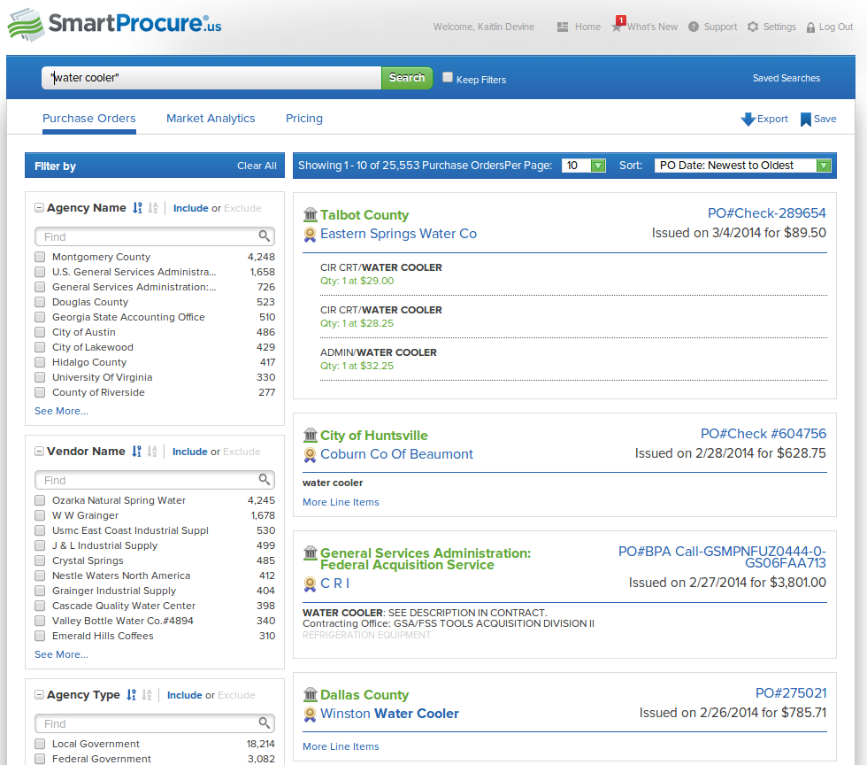

Open Data for
Procurement
Kaitlin Devine
Senior Developer
@kaitlinbdevine
Some Of Our Contracting Work


What is Open Data?
- Available for use, reuse, and distribution by anyone
- Available in a convenient form and machine readable
- Unencumbered by licensing restrictions
- Does not require registration or identification
^Procurement
...for Procurement
- solicitations and awards
- participants in the process
- disputes, bid protests
- contract performance and execution
Current State of Open Procurement Data
- Often available via a website, not as regularly updated data
- Piecemail, not comprehensive
- Lack of good data on contract performance is widespread
Why Should I Care?
Benefits of Open Procurement Data
- Attract more diverse bidders
- Better access to prices paid
- Real strategic sourcing, More contract vehicles available
- Allows for uninhibited, cheap, third party innovation
- distributed oversight by journalists, the public, other contractors
- Easier to identify bad actors
SmartProcure
RFP-EZ

RFP-EZ
- Geared towards small business
- Bids 30% lower than average
- Attracted 270 new businesses

RFP365

hōrd from Govtribe


Average Number of Employees :
3.5
Attributes of Good Data
- Timely notices as data, not documents
- Data publishing is on a reliable, predictable schedule
- Using standard definitions and vocabulary (CPV)
- Documenting the data
Why Couldn't They Detect the Change?
Resources
- http://sunlightfoundation.com/procurement/opendataguidelines
- smartprocure.us
- https://rfpez.sba.gov/
- http://www.rfp365.com/
- http://govtribe.com/
- http://openleis.com/
- http://presentation.sunlightfoundation.com/procurement.html